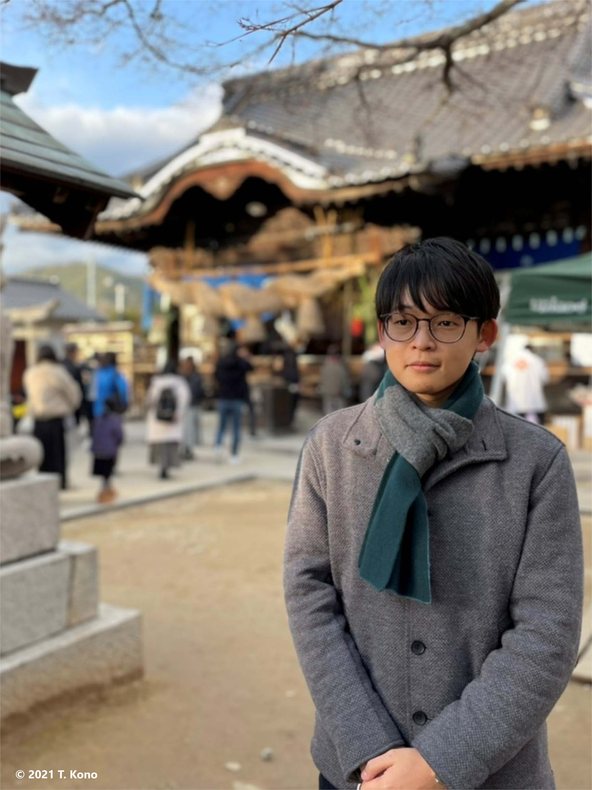

河野 嵩

| 研究テーマ | 光電子分光を用いたCo基ホイスラー合金の電子状態の研究 |
|---|---|
| 出身 | 岡山 |
| 卒業論文題目 | Co基ホイスラー合金のスピン及び軌道に依存した電子状態の観測 |
| 原著論文 | 2. T. Kono, M. Kakoki, T. Yoshikawa, X. Wang, K. Goto, T. Muro, R. Y. Umetsu, and A. Kimura "Visualizing Half-Metallic Bulk Band Structure with Multiple Weyl Cones of the Heusler Ferromagnet" Phys. Rev. Lett. 125, 216403 (2020). arXiv:2010.08415 1. T. Kono, M. Kakoki, T. Yoshikawa, X. Wang, K. Sumida, K. Miyamoto, T. Muro, Y. Takeda, Y. Saitoh, K. Goto, Y. Sakuraba, K. Hono, and A. Kimura "Element-specific density of states of Co2MnGe resolved by resonant photoelectron spectroscopy" Phys. Rev. B 100, 165120 (2019). |
| 国際学会 | 2. 学会名：The 2019 Korea - Japan Students Workshop 題目：Direct Observation of Half-metallic Band Structure on Heusler-type Co2MnGe 場所：Pusan National University (2019.11) 口頭発表 1. 学会名：The 19th International Conference on Solid Films and Surfaces 題目：Element-specific density of states of Co2MnGe resolved by resonant photoelectron spectroscopy 場所：Hiroshima, Japan (2019.10) ポスター発表 |
| 国内学会 | 4. 学会名：第34回日本放射光学会年会・放射光科学合同シンポジウム 題目：軟X線ARPESによるCo2MnGeのハーフメタル電子状態とワイル交差の直接観測 場所：広島大学（2021.1, オンライン） 口頭発表 3. 学会名：日本物理学会 2020年・秋季大会 題目：軟X線ARPESによるホイスラー合金のハーフメタルなバンド構造と複数のワイル交差点の観測 場所：熊本大学（2020.9, オンライン） 口頭発表 2. 学会名：第80回応用物理学会秋季学術講演会 題目：共鳴光電子分光によるCo2MnGeの部分状態密度の観測 場所：北海道大学 (2019.9) ポスター発表 1. 学会名：日本物理学会 2019年・秋季大会 題目：共鳴光電子分光によるホイスラー型Co2MnGe薄膜の部分状態密度の観測 場所：岐阜大学 (2019.9) 口頭発表 |
| 受賞歴 | 5. 賞名：令和2年度成績優秀学生 広島大学エクセレントスチューデントスカラシップ 受賞年月：2020.12 4. 賞名：理学研究科長表彰 受賞年月：2020.3 3. 賞名：Best Presentation Award The 2019 Korea - Japan Students Workshop 受賞年月：2019.11 2. 賞名：Best Student Poster Award The 19th International Conference on Solid Films and Surfaces 受賞年月：2019.10 1. 賞名：卒業論文発表優秀賞 受賞年月：2019.3 |